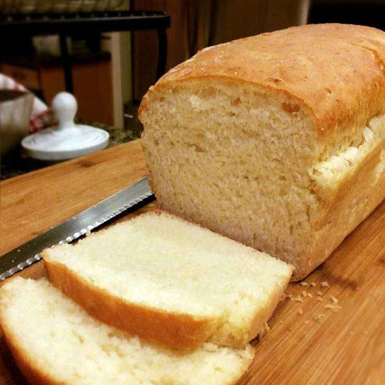

Receita do Dia
Pão de Forma Caseiro

Ingredientes
- 2 xícaras de leite morno
- 2 ovos
- 1/3 xícara de óleo
- 1 colher (sopa) açúcar
- 1 colher (café) de sal
- 30 g de fermento biológico
- 4 xícaras de farinha de trigo
Modo de Preparo
- Depois em uma tigela misture com a farinha de trigo.
- No liquidificador, bata o leite, os ovos, óleo, o açúcar,
o sal e o fermento.
- Unte duas formas de pão, despeje a massa e deixe
descansar por 20 minutos.
- Asse a 180° C por 30 minutos.